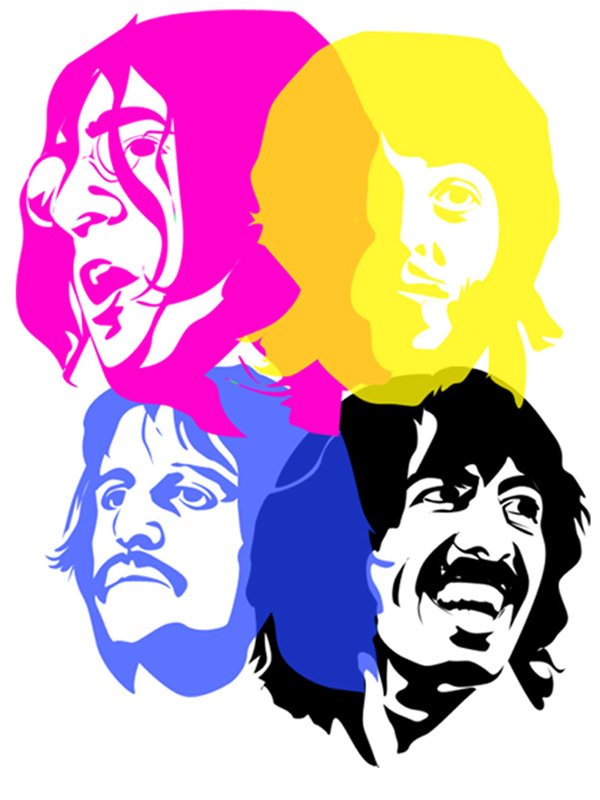
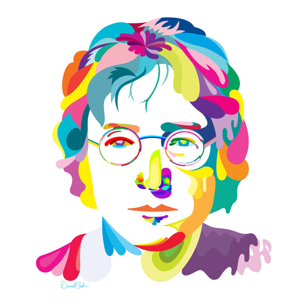

John Lennon was born on October 9, 1940, in Liverpool, England. He met Paul McCartney in 1957 and invited McCartney to join his music group. They eventually formed the most successful songwriting partnership in musical history. Lennon left the Beatles in 1969 and later released albums with his wife, Yoko Ono, among others. On December 8, 1980, he was killed by a crazed fan named Mark David Chapman.
Early Life
Famed singer-songwriter John Winston Lennon was born on October 9, 1940, in

Liverpool, Merseyside, England, during a German air raid in World War II.
When he was 4 years old, Lennon's parents separated and he ended up living with his Aunt Mimi. Lennon's father was a merchant seaman.
He was not present at his son's birth and did not see a lot of his son when he was small.
Lennon's mother, Julia, remarried, but visited him and Mimi regularly. She taught Lennon how to play the banjo and the piano and purchased his first guitar. Lennon was devastated when Julia was fatally struck by a car driven by an off-duty police officer in July 1958. Her death was one of the most traumatic events in his life.
As a child, Lennon was a prankster and he enjoyed getting in trouble. As a boy and young adult,he enjoyed drawing grotesque figures and cripples. Lennon's school master thought that he could go to an art school for college, since he did not get good grades in school, but had artistic talent.
Solo Career
Not long after the Beatles broke up, in 1970, Lennon released his debut solo album, John Lennon/Plastic Ono Band, featuring a raw, minimalist sound that followed "primal-scream" therapy. He followed that project with 1971's Imagine, the most commercially successful and critically acclaimed of all Lennon's post-Beatles efforts. The title track was later named No. 3 on Rolling Stone magazine's "All-Time Best Songs" list.
Peace and love, however, was not always on Lennon's agenda.

The friImagine also included the track "How Do You Sleep?," a vehement response to veiled messages at Lennon in some of McCartney's solo recordings.
ends and former songwriting duo later buried the hatchet, but never formally worked together again.
Lennon and Ono moved to the United States in September 1971, but were constantly threatened with deportation by the Nixon Administration. Lennon was told that he was being kicked out of the country due to his 1968 marijuana conviction in Britain, but the singer believed that he was being removed because of his activism against the unpopular Vietnam War. Documents later proved him correct. (Two years after Nixon resigned, in 1976, Lennon was granted permanent U.S. residency.)
In 1972, while battling to stay in America, Lennon performed at Madison Square Garden in New York City to benefit mentally handicapped children and continued to promote peace. His immigration battle took a toll on Lennon's marriage, and in the fall of 1973, he and Ono separated. Lennon went to Los Angeles, California, where he partied and took a mistress, May Pang. He still managed to release hit albums, including Mind Games (1973), Walls and Bridges (1974) and Rock 'n' Roll (1975). During this time, Lennon famously collaborated with David Bowie and Elton John.
Lennon and Ono reconciled in 1974, and she gave birth to their only child, a son named Sean, on Lennon's 35th birthday (October 9, 1975). Shortly thereafter, Lennon decided to leave the music business to focus on being a father and husband.
Death
In 1980, John Lennon returned to the music world with the album Double Fantasy, featuring the hit single "(Just Like) Starting Over." Tragically, just a few weeks after the album's release, Lennon was shot several times by a deranged fan in front of his apartment complex in New York City. Lennon died at New York City's Roosevelt Hospital on December 8, 1980, at the age of 40.
John Lennon's assassination had, and continues to have, a profound impact on pop culture. Following the tragic event, millions of fans worldwide mourned as record sales soared. And Lennon's untimely death still evokes deep sadness around the globe today, as he continues to be admired by new generations of fans. Lennon was posthumously inducted into the Songwriters Hall of Fame in 1987, and the Rock and Roll Hall of Fame in 1994.